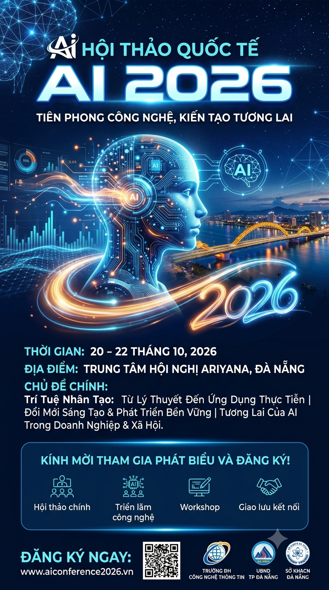

Hội Thảo: Ứng Dụng Trí Tuệ Nhân Tạo Trong Kỷ Nguyên Số
1. Giới thiệu sự kiện
Hội thảo "Ứng Dụng Trí Tuệ Nhân Tạo Trong Kỷ Nguyên Số" là sự kiện chuyên đề lớn nhất học kỳ này do Khoa Toán - Tin tổ chức. Chương trình nhằm giúp sinh viên cập nhật những xu hướng công nghệ mới, hướng dẫn cách sử dụng AI có trách nhiệm trong học tập, đồng thời mang đến cơ hội giao lưu trực tiếp với các chuyên gia từ doanh nghiệp.

2. Thông tin tổ chức
| Hạng mục | Thông tin chi tiết |
|---|---|
| Thời gian tổ chức | 08:00 - 11:30, Thứ Bảy, 26/09/2026 |
| Địa điểm | Hội trường A, Trường Đại học Sư phạm - ĐH Đà Nẵng |
| Diễn giả khách mời | TS. Nguyễn Văn A - Chuyên gia AI tại TechCorp |
| Đối tượng tham gia | Toàn bộ sinh viên khối ngành Công nghệ thông tin và Sư phạm Tin học |
| Quyền lợi | Được cộng 02 điểm rèn luyện cấp Khoa |
| Số lượng sinh viên tối đa | 300 sinh viên (Ưu tiên đăng ký sớm) |
3. Video giới thiệu chủ đề
Mời các bạn sinh viên xem đoạn video ngắn giới thiệu sơ lược về nội dung và các chủ đề hấp dẫn sẽ được chia sẻ tại buổi hội thảo: